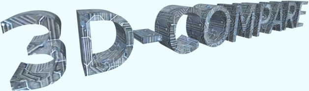

Очень часто на форумах по программированию 3D-графики возникают вопросы по поводу "что быстрее" да "как лучше".
К примеру, кто-то говорит, что лучше вершины для всей статичной геометрии хранить в одном
буфере, кто-то, наоборот, что лучше не пихать всё в одну кучу, а разделить на несколько.
Да и вообще, очень часто многие принимают на веру алгоритмы и методы, сами не тестируя их и не сравнивая.
Ну, к примеру, всем очевидно, что хранение данных в видеопамяти гораздо быстрее, чем в оперативной.
В данном случае, что-то выяснять действительно нет смысла -- и так всё понятно, но есть и более неоднозначные случаи.
Как раз для таких случаев я и решил создать серию тестов 3D-COMPARE. Чтобы понять что чучше, в каком/каких случаях и
самое главное, о чём очень часто забывают, какой выигрышь в производительности можно получить при использовании того
или иного метода. И в последнем случае важна не столько производительность, сколько соотношение качество(стабильность)/скорость.
И если есть возможность увеличить FPS, скажем на 30%, но это приведёт к большому усложнению кода, снижению его
понимаемости в несколько раз и, как следствие, надёжности (человеческий фактор ещё никто не отменял), то лучше
обойтись без этой оптимизации. Хотя всё зависит от ситуации.
Немного о тесте.
Вначале, как обычно, "разогревочный цикл". Хотя... "как обычно" тут не уместно, т.к. этот тест
первый. Ну ладно. Потом 7 подтестов!!!, циклически замкнутых. Вобщем запускаете и идёте пить кофе.
Я сам с трудом вытерпел 6 минут работы теста. :-)
В каждом подтесте отображается одно и то же, только разными способами.
Сцена конечно неудачная, даже слишком. Хуже просто придумать нельзя. Тест предназначен для сравнения
способов вывода статичной геометрии, а всё время сжирает огромный overdraw (готов поспорить больше
вы никогда не видели).
И чтобы его как-то убавить, тест проходит в разрешении 640x480. Также дополнительную нагрузку на
процессор осуществляет фоновая музыка (хотя там нагрузка просто смешная).
Но если учесть, что бОльшая часть геометрии не видна, то overdraw более-менее всё это компенсирует.
Теперь о подтестах:
Первые 4 теста используют VBO (как для вершин, так и для треугольников).
Во втором тесте используется glInterleavedArrays. (В спецификации OpenGL говорилось, что использование
этой команды вместо нескольких gl*Pointer в некоторых реализациях будет быстрее.)
Сортировка по текстурам означает, что glBindTexture будет вызываться за кадр столько раз, сколько разных
текстур вообще есть в сцене (т.е. 10), отсутсвие этой сортировки означает, что glBindTexture будет вызываться
столько раз, сколько объектов вообще в сцене (т.е. 133).
Последний тест вообще беспрецедентно тормозной, т.к. помимо вызова glBegin/glEnd на каждый треугольник
вызывается ещё и glBindTexture.
Немного о тесте.
Хоть зима уже кончается, Новый Год давно прошёл, сделал всё-таки тест на зимнюю тему.
Ну, предмет тестирования, как можно догадаться, снежинки, т.е. скорость их вывода. Я специально не стал придумывать
хитрых алгоритмов для определения их видимости -- весь падающий снег рендерится сразу (причём во всех тестах, кроме одного,
делается это вызовом одной команды glDrawArrays). Таким образом бОльшая часть снежинок не видна и вершинные конвейеры
задействуются по максимуму.
К слову о снежинках. Помнится на форуме кто-то думал делать 100 штук. Ну, я поначалу тоже думал делать 100 ... тысяч.
А потом решил, что мало. И увеличил это число на порядок. Я бы увеличил и дальше, но мой аппетит умерил тот факт, что
миллион снежинок занимает уже 88 Мб, понятное дело в видеопамяти, так что дальнейшее увеличение неразумно.
Кстати. О шейдерах. Как обычно у меня бывает, между теорией и практикой большая пропасть (временная), так что хоть и
изучать шейдеры я начал достаточно давно, те, что используются в этом тесте для меня первые, и писать я их начал пару недель назад.
Так что на оптимальность не претендую. А потому их можно свободно изменять самостоятельно. Буду рад предложениям по увеличению
эффективности. К тому же 1-й подтест использует 1-й шейдер, а второй -- 2-й, так что любой сможет быстро определить прирост
скорости от своей оптимизации.
Информация о рендеринге:
Снежинки для GL_POINTS хранятся в виде трёх float-значений (x,y,shift). Последнее принимает значение от 0 до 1 и соответсвует положению
снежинки в начальный момент времени. 0 -- небо, 1 -- земля. Таким образом z-координата в видовой СК увеличивается со временем.
Для GL_QUADS каждая снежинка состоит из четырёх вершин. Каждая вершина представляет собой совокупность текстурной координаты
и тройки (x,y,shift), значение которой описано выше.
Замечание: шейдеру "point.vs" предшествует объявление "const float PointSizeC=...;". Значение константы рассчитывается при запуске теста,
после чего формируется окончательный код шейдера (заданием нескольких исходных строк в glShaderSourceARB).
(C) Третьяк А.В.